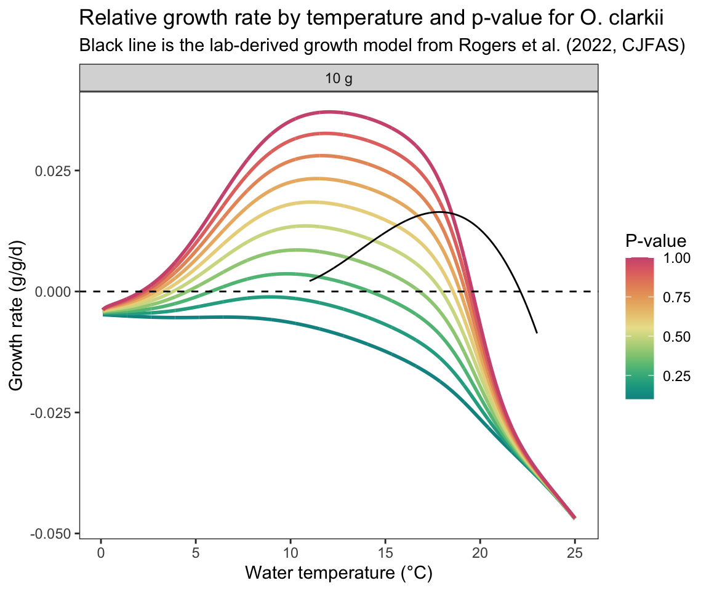

Code
Constants <- fncReadConstants()
pred.en.dens <- 5900 #predator energy density
oxy <- 13560 #oxygen consumed
pff <- 0.1 #percent indigestible prey
prey.en.dens <- 3500 # see Railsback and Rose 1999, Beauchamp et al. 2007Purpose: Precalculate growth to look-up growth rates based on weight, temperature, and p-value (proportion of temperature-adjusted maximum consumption).
Source dependencies
Set parameters for O. clarkii
Constants <- fncReadConstants()
pred.en.dens <- 5900 #predator energy density
oxy <- 13560 #oxygen consumed
pff <- 0.1 #percent indigestible prey
prey.en.dens <- 3500 # see Railsback and Rose 1999, Beauchamp et al. 2007Set up arrays. Sequences must match the lookup sequences defined in fncGrowthFish(), fncGrowthPossible().
# Sequences of water temperature, p-value, and fish mass
waterTemps <- cbind("pid" = seq(1, length(seq(0.1, 25, 0.01))), "WT" = seq(0.1, 25, 0.01)) # water temps are rounded to the nearest 0.01 degree...if you want greater resolution, you need to reduce the step size
pvals <- seq(0.1, 1.0, 0.1) # p-value (10 values). For simplicity, we can assume a fixed p-value
weights <- c(10) # fish mass (1 value): same as Lundberg et al. (2026)
# set up empty arrays
wt.growth <- array(NA, dim = c(nrow(waterTemps), length(pvals), length(weights))) # dim = c(250 WTs, 10 pvals, 1 weights)
respiration <- consumption <- wastes <- cmax <- wt.growthLoop through arrays to record growth for each case
for(w in 1:dim(wt.growth)[3]){
ww <- weights[w]
for(r in 1:dim(wt.growth)[2]){
pp <- pvals[r]
Input <- fncGetBioEParms("cutthroat", pred.en.dens, prey.en.dens, oxy, pff,
waterTemps,
startweights = rep(ww, nrow(waterTemps)),
pvals = rep(pp, nrow(waterTemps)))
Results <- BioE(Input, Constants) #run BioE code given input and constants
wt.growth[,r,w] <- c(Results$Gg_WinBioE) # growth in g/g/d, standardized by fish weight
consumption[,r,w] <- c(Results$Consumption)
wastes[,r,w] <- c(Results$Egestion + Results$Excretion + Results$S.resp)
respiration[,r,w] <- c(Results$Respiration)
cmax[,r,w] <- c(Results$Consumption_max)
## In Joules instead of grams:
# wt.growth[,r,w] <- c(Results$Growth_j)
# consumption[,r,w] <- c(Results$Consumption_j)
# wastes[,r,w] <- c(Results$Egestion_j + Results$Excretion_j + Results$Sj.resp)
# respiration[,r,w] <- c(Results$Respiration_j)
}
if (w %% 500 == 0) print(w)
}Save outputs. Only ‘wt.growth’ is needed for simulations. The others are merely for plotting below.
save("wt.growth", file = "data/wt.growth.array.cutt.RData")
save("respiration", file = "data/respiration.array.cutt.RData")
save("wastes", file = "data/wastes.array.cutt.RData")
save("consumption", file = "data/consumption.array.cutt.RData")
save("cmax", file = "data/cmax.array.cutt.RData")Load back in to plot
load("data/wt.growth.array.cutt.RData")
load("data/respiration.array.cutt.RData")
load("data/wastes.array.cutt.RData")
load("data/consumption.array.cutt.RData")
load("data/cmax.array.cutt.RData")First, parameterize growth model as provided in Rogers et al. (2022, CJFAS) for the Yellowstone River strain of cutthroat trout:
fncGrowthRogers <- function(temps) {
return(10.76 - (0.00536 * temps^3) + (0.22 * temps^2) - (2.73 * temps))
}
ggd_curve <- tibble(temp = seq(11, 23, by = 0.01),
ggd = fncGrowthRogers(temp)) Plot bioenergetics-derived growth rate by temperature for a 10 gram fish, across the full range of p-values. Line color runs blue (low p) → red (high p). Overlay Rogers et al. (2022) model for comparison.
mass_idx <- c(1)
mass_lbl <- c(10)
map_dfr(seq_along(mass_idx), \(k) {
map_dfr(seq(1, 10, by = 1), \(pi) {
tibble(
weight_g = factor(paste0(mass_lbl[k], " g"), levels = paste0(mass_lbl, " g")),
pval = pvals[pi],
temp = waterTemps[, "WT"],
growth = wt.growth[, pi, mass_idx[k]]
)
})
}) |>
ggplot(aes(x = temp, y = growth, color = pval, group = pval)) +
geom_line(linewidth = 1) +
geom_hline(yintercept = 0, linetype = "dashed", color = "black") +
facet_wrap(~ weight_g, ncol = 3) +
scale_color_gradientn(colors = hcl.colors(100, "Temps"), name = "P-value") +
# coord_cartesian(ylim = c(-0.06, 0.16)) +
labs(x = "Water temperature (°C)", y = "Growth rate (g/g/d)",
title = "Relative growth rate by temperature and p-value for O. clarkii",
subtitle = "Black line is the lab-derived growth model from Rogers et al. (2022, CJFAS)") +
theme_bw() + theme(panel.grid = element_blank()) +
geom_line(data = ggd_curve, aes(x = temp, y = ggd/100), inherit.aes = FALSE) 
Note that the optimum temperature for growth and scope for growth at high temperatures are quite different. The Rogers model predicts near-0 growth at 11 deg. C, which is unrealistic based on prior work in the upper Snake River watershed (Baldock et al. 2025, Freshwater Biology). The Rogers model also does not provide growth estimates below 11, limiting its utility for the growth potential analysis.